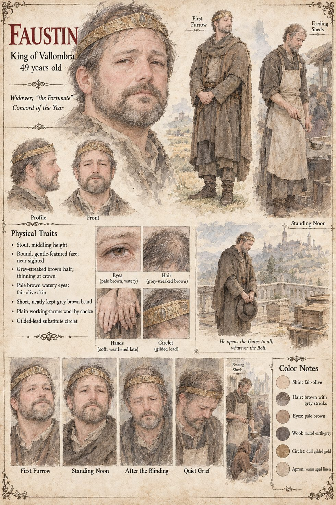

Faustin
King of Vallombra, called ‘the Fortunate’ · widower · 49 years old
A stout, near-sighted, gentle widower whose only known vice is bees: sixteen skeps on the palace roof, one for each lord of his council, every one of them dead by the first spring of the Long Night. He rules by a contract with the year, and in the second winter he has the kingdom's three-hundred-and-forty-year-old gold circlet melted by a goldsmith and sold weight for weight to a southern grain-factor, which buys eleven days of bread. At the First Furrow he walks out alone to turn the first furrow of the year, and the share snaps in two. Then let it be recorded, he says, that I tried.
When Sigrid's host is blinded and shot at the Gate he rides out bareheaded to stop the arrows, then opens every gate, name or no name, and has Marcello do the sum: four thousand seven hundred and twelve more mouths, and a thousand and forty-one dead among his own. He writes it down himself. He ladles soup in the sheds for three months, is told by the Granary's physician exactly what is passing from bowl to bowl, thanks her for the figure, and dies in eleven days among the empty hives. He leaves a daughter, Livia, a ledger, and a debt, and asks Piero not to let her think she is wearing the sun.
“It was only ever a hat, Severin. The bread, I am told, is real.”
Appears In

Related Subjects


Related Records

Faustin takes the handles at the First Furrow, and the share that has turned the kingdom's first furrow for three hundred and forty springs snaps in two.

Faustin in a linen apron over plain wool, ladling soup in the great canvas sheds on the Round every evening for three months, to the men who had tried to reach him through a light that blinded them.